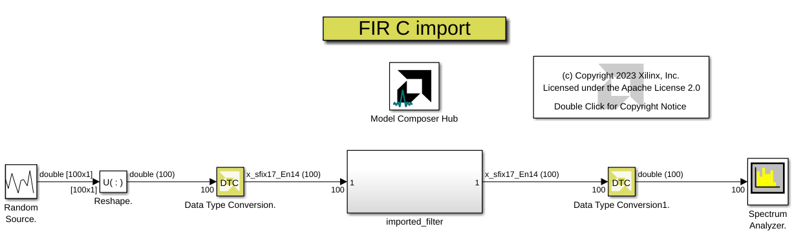

Model Composer allows users to import C/C++ code as a block. You can simulate the imported block along with other blocks in your design and also export it to one of the target types. In this example, we import a symmetric FIR filter developed in C++ into Model Composer as a block.
This example also uses the following MathWorks toolbox:
The FIR filter we are importing is a 103 tap symmetric FIR filter. The filter accepts a vector of size 100 and data type xsfix17En14 (signed, 17 bit wide, 14 bit fractional) as input.
To create a block from C/C++, use the command xmcImportFunction at the MATLAB Command Window. Upon execution of this command, a library gets created that has one or more blocks inside it. After saving this library, you can drag the blocks from the library to your model. In case of this example, you only create one block out of your C++ code.
Open the model in this example. This model is a test harness for the FIR filter we are importing to Model Composer.

To create a block out of the C++ code we use the 'xmcImportFunction' command. Use the following command to see the help for xmcImportFunction.
help xmcImportFunction
import_function.m is a one line script that shows the usage of xmcImportFunction.
open import_function.m
Here is the content of import_function.m for ease of reference
xmcImportFunction('fir_c_import',{'fir_sym'},'fir_sym.h',{'fir.h','fir_sym.cpp','coef_halfof103.inc'},{})
The first argument is the name of the library that would get created upon the execution of this command. Note that the library has been already created and saved in the example directory. The second argument is the name of the C++ function we are importing. This function is declared in the header file that is the third argument in the function call. The function header in fir_sym.h is shown below:
#pragma XMC INPORT din
#pragma XMC OUTPORT dout
#pragma XMC SUPPORTS_STREAMING
void fir_sym (ap_fixed<17,3,AP_TRN,AP_WRAP> din[100], ap_fixed<17,3,AP_TRN, AP_WRAP> dout[100]);
Note the three pragmas right before the declaration of the function. This is the only modification to the original C++ code to import it to Model Composer. Here we specify which parameter is the input to the block and which parameter is the output of the block. The third pragma indicates the fir_sym function is a steaming function. This means the function processes the input as they come in and does not require random access to the input data. This will result in a more efficient hardware implementation on the device. Please refer to the Vitis Model Composer user guide (UG1483) for more details. As you explore the FIR code, you would notice that there are other pragmas in the code. These pragmas are inserted by the developer of the C++ code to optimize the implementation of this algorithm on Xilinx devices. Model Composer will take advantage of these pragmas but will not modify or add to them.
ap_fixed is High Level Synthesis (HLS) notation to specify a fixed point number. To learn more about HLS, refer to Vitis HLS reference manual (UG1399).
The fourth argument is a cell array listing all the needed files to compile the function and the fifth argument is another cell array that specifies the include files.
Copyright 2020 Xilinx
Licensed under the Apache License, Version 2.0 (the "License");
you may not use this file except in compliance with the License.
You may obtain a copy of the License at
http://www.apache.org/licenses/LICENSE-2.0
Unless required by applicable law or agreed to in writing, software
distributed under the License is distributed on an "AS IS" BASIS,
WITHOUT WARRANTIES OR CONDITIONS OF ANY KIND, either express or implied.
See the License for the specific language governing permissions and
limitations under the License.